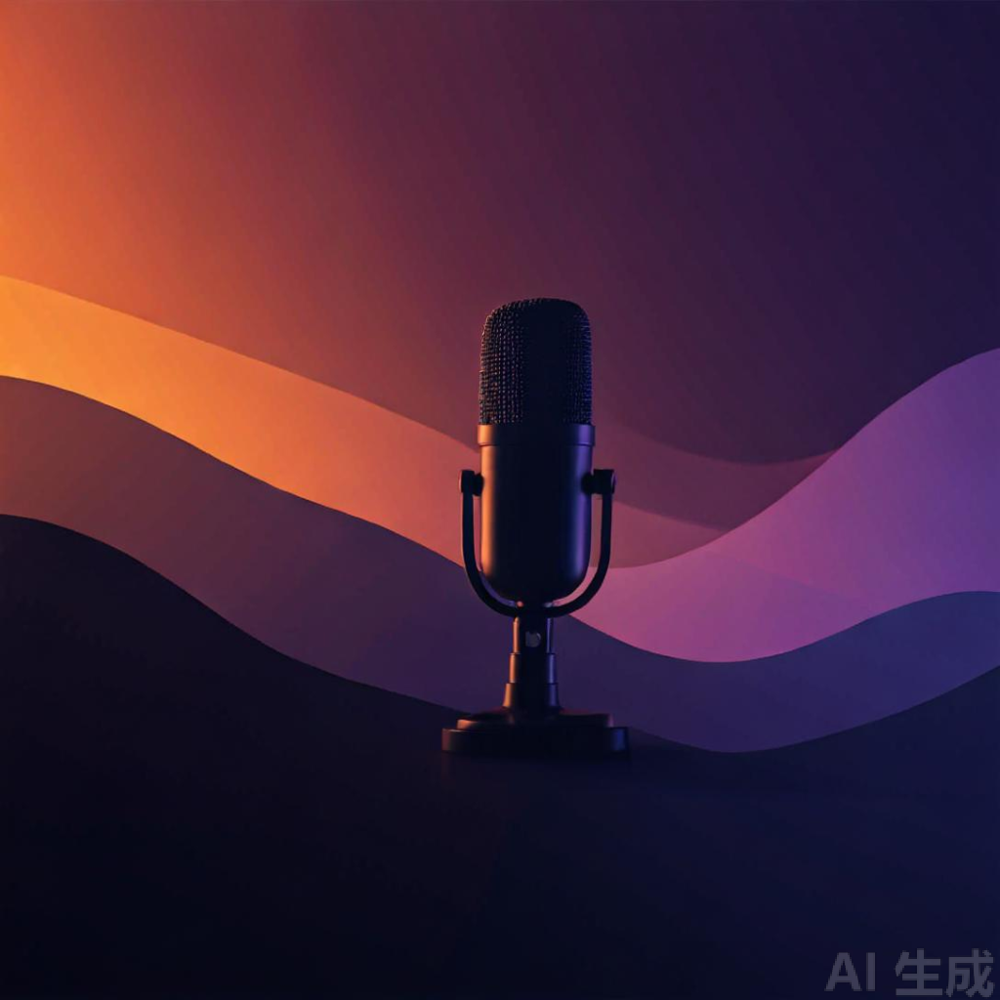

工程师的知识管理：从收藏到复利
《工程师的知识管理：从收藏到复利》第一章 为什么你的收藏夹在吃灰

每个系列含旗下所有集，按发布日期倒序。
《工程师的知识管理：从收藏到复利》第一章 为什么你的收藏夹在吃灰
《用三个晚上做的小工具，被 WorkBuddy 一夜归零了》第 1 部分
首集 — 把文章、白皮书、长文，变成能听的电台。
最近更新的 3 集（不包含 Hero 那一期）。完整列表在 节目 里按系列看。
小搭电台是「小搭」和「斌哥」自用的个人播客流水线 —— 我们读文章、做笔记，<br>然后让 AI 把值得反复听的部分讲出来，放到这里。不追热点，不做新闻，<br>节奏是「每周或每两周一期」，来源是我们最近在读、值得慢下来读的东西。<br>如果你也喜欢把文章听进去，欢迎订阅。